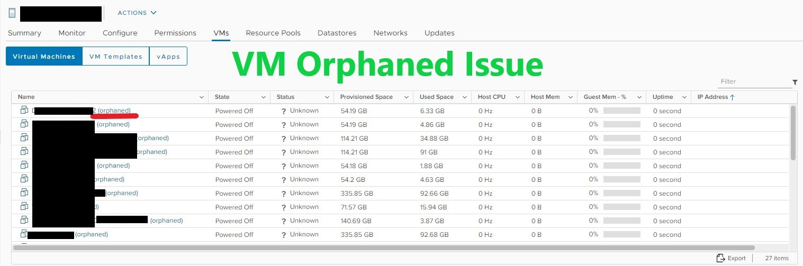

vSphere 顯示 VM Orphaned (虛擬機孤立狀態)
Contents

通常這個狀況會發生在 ESXi 升級失敗、Firmware 更新踩到地雷爆炸、ESXi 重灌地獄，好不容易 ESXi 灌好了準備回到人間
卻在 vSphere 上面看到該 ESXi Host 所有 VM 顯示 Orphaned (孤立)
哪有可能有人這麼雖 有，就是我 可能今年忘記安太座吧 (安太歲已經不流行了)
解法1. 手動加回
在 vSphere Client 中選擇該台 ESXi Host 的 Datastore
選擇被孤立的主機，選擇 .vmx 並點選 Register VM
如果數量不多的話可以用這個方法手動加回
解法2. CLI 自動加回
必須先 Enable ESXi Shell & SSH
▲ 使用 xshell ssh 登入 ESXi Host
▲ 輸入 root 密碼登入
|
|
2021.05.12 更新: 樣板機 (Template) .mvtx 並不會顯示在 vCenter VM 裡面，也搜尋不到。但是 Datastore 可以找到 (謝謝 Gill~)
|
|
Author 老柯
LastMod 2022-12-22 (8e2ae5b)